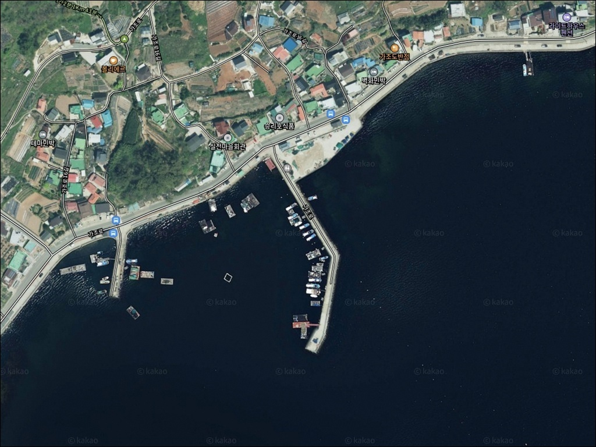
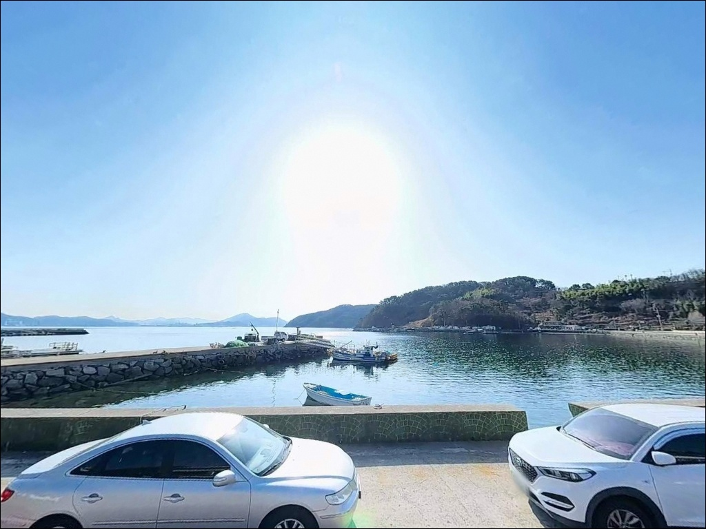
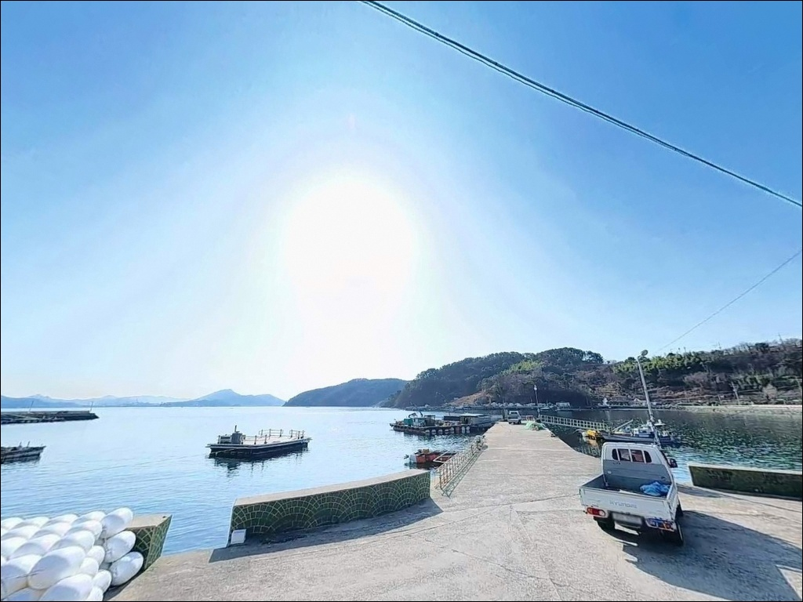
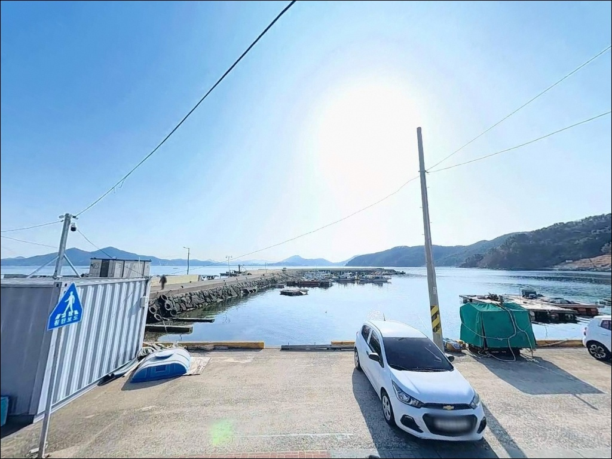
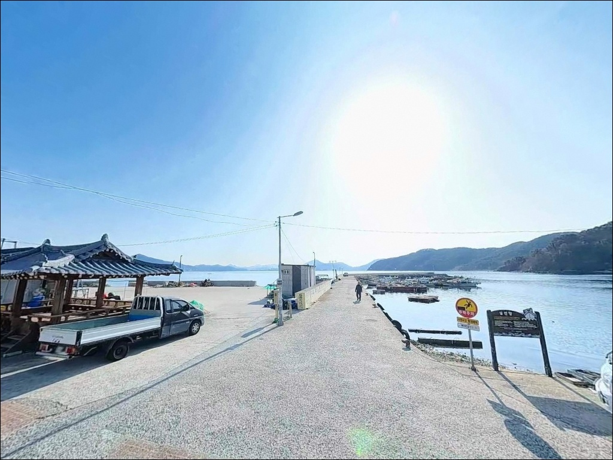
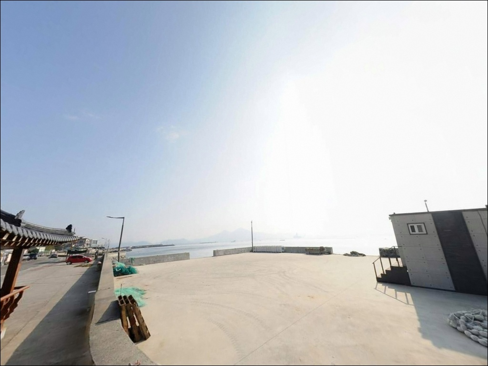
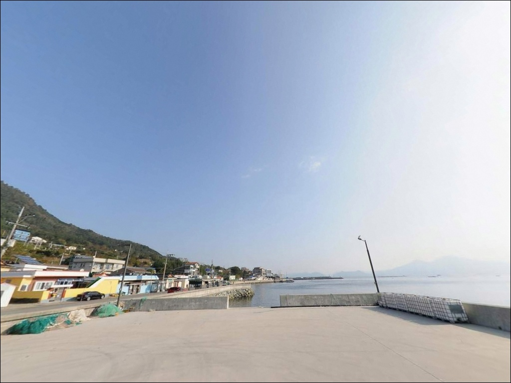
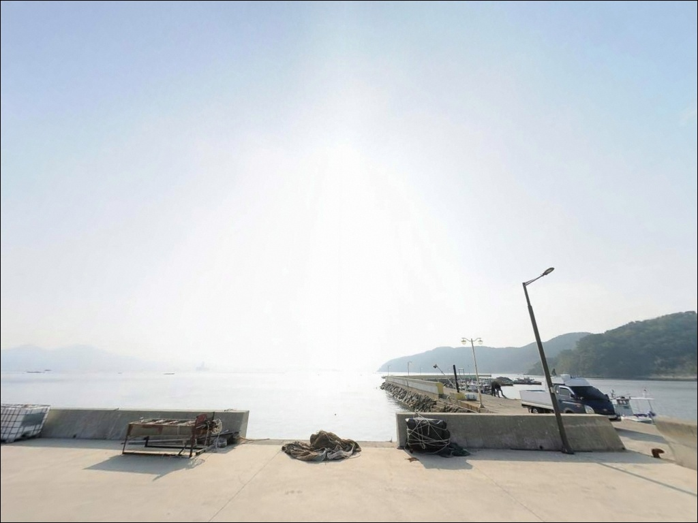
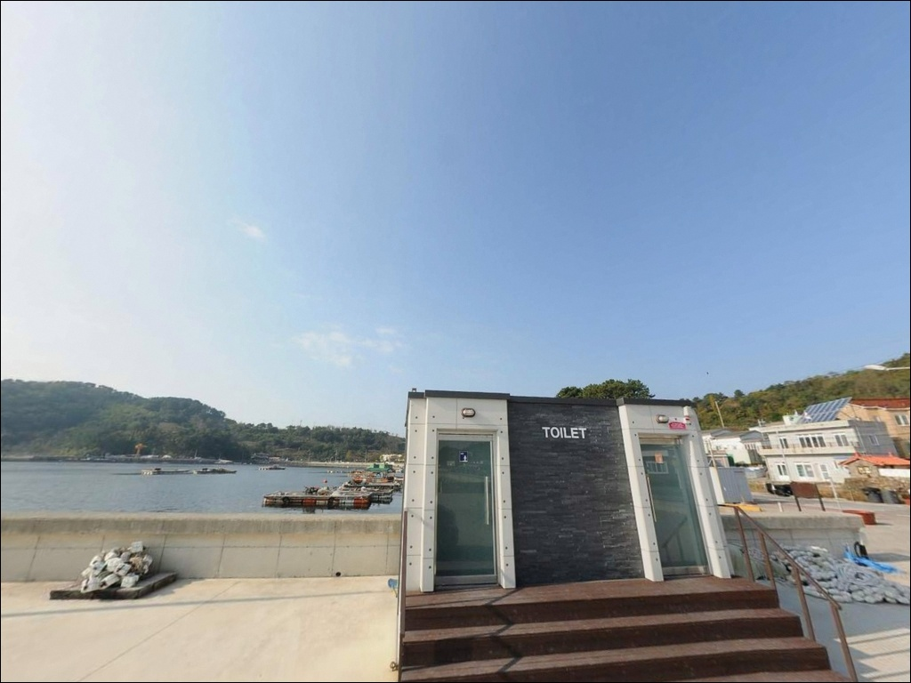

썰물엔 바닥만 긁히다가 초들물 차오르며 수심 6m 살아난 가조도 실전방파제


포인트 안내
실전방파제
경남 거제시 사등면 창호리 650-3
물때 계산 없이 실전방파제에 도착하면
썰물 시 수심이 낮아져
어떤 채비를 써도 바닥을 긁는 상황이 됩니다.
이 포인트는 초들물부터 중날물 사이
수위가 올라오는 타이밍에만
낚시 조건이 제대로 형성되는 구조입니다.
가조도 창호리 실전마을 앞에 자리한
이 방파제는 내항 구조로
파도와 바람 영향이 제한적이고
계단식 발판이 갖춰진 안정적인 포인트입니다.
감성돔, 갑오징어, 도다리를 중심으로
다양한 낚시 방식을 적용할 수 있는
거제 가조도 대표 생활낚시 자리입니다.
이 글은 실전방파제의
진입 동선, 차박 여건, 물때 판단 기준,
낚시 스타일별 공략 조건에 집중합니다.
조황 단정이나 특정 어종 보장은
이 글의 범위에 포함되지 않습니다.

1. 진입 동선과 포인트 접근성
가조도는 가조연육교로 거제 본도 사등면과 연결되어 있어
차량 접근 자체에 큰 장벽은 없습니다.
연육교를 넘은 뒤 가조도 해안도로를 따라
창호리 방면으로 내려가면
실전마을에 닿습니다.
마을 진입로는 1~1.5차선 수준의 포장도로로,
중형 차량은 대체로 문제없이 진입 가능합니다.
대형 SUV나 트레일러를 연결한 차량이라면
출발 전 위성지도로 창호리 진입로를
미리 확인하는 편이 안전합니다.
마을 안쪽까지 들어갈수록 도로 폭이 좁아지며,
회차 공간이 넉넉하지 않은 구간이 포함됩니다.
주차는 방파제 입구 공터를 활용합니다.
소형 차량 기준 2~3대 수용이 가능한 수준이며,
주차 여건이 여의치 않을 경우
해안 진입로 갓길을 대안으로 활용할 수 있습니다.
어선 이동 동선을 막지 않는 자리가 기본 원칙입니다.

2. 차박 환경과 야간 체류 여건
실전마을은 민가 수가 많지 않은
소규모 어촌 마을입니다.
야간 차량 통행이 드물고
마을 밀집도가 낮아
차박 프라이버시는 양호한 환경입니다.
방파제 주변으로 일부 가로등이 있어
야간 시야 확보가 어느 정도 가능합니다.
다만 방파제 입구 공터는 주차 대수가
2~3대 수준으로 제한적입니다.
차박을 메인으로 계획하는 경우라면
사전에 주차 공간 확보 여부를 감안해
평일 방문을 우선 검토하는 편이 좋습니다.
주말 낚시 성수기에는 주차 경쟁이 생길 수 있습니다.
내항 구조 특성상 외해 파도 영향이 적어
차 안에서 하룻밤 머무는 체류 환경은
비교적 안정적입니다.
민가와 가까운 편이라
야간 소음 관리와 조명 방향에
세심한 주의가 필요합니다.


3. 주변 편의시설 및 인프라 현황
방파제 입구에는
간이 수세식 화장실(남녀 2실)이 설치되어 있습니다.
거제시에서 관리하는 공식 시설로,
낚시와 차박을 병행하는 방문자에게
실용적인 편의 조건이 됩니다.
편의점이나 마트는 창호리 마을 내에서는
기대하기 어렵습니다.
식수, 얼음, 낚시 소품, 간식은
가조연육교를 건너기 전
사등면 성포리 방향에서
미리 갖추고 진입하는 것이 현실적입니다.
성포리 소재지에는 편의점과 마트가 집중되어 있습니다.
주유소도 성포삼거리 인근에서 이용할 수 있습니다.
응급 상황 발생 시 거제면 방향으로
이동하면 의원급 의료시설 접근이 가능합니다.
연료와 비상약품은 출발 전 완비하는 편이 안전합니다.

4. 진입 전 반드시 챙겨야 할 준비사항
실전방파제에서 가장 먼저 확인해야 할 것은
물때입니다.
바다타임 기준 적정 물때는 초들물~중날물로,
썰물 시 수심이 극히 낮아지는
물때 의존도가 높은 포인트입니다.
출발 시각을 초들물 기준으로 역산해
도착 시간을 맞추는 것이 기본 전략입니다.
실전방파제는 펄 저질 구간이 포함되어 있어
채비 손실이 잦은 편입니다.
원투낚시 봉돌이 바닥에 묻히는 경우를 대비해
여분 채비는 넉넉하게 준비합니다.
에깅 계열도 바닥 탐색 시
에기 손실을 감안한 여분 확보가 기본입니다.
방파제 발판이 비나 이슬 후에는
미끄럽습니다.
낚시화 또는 미끄럼 방지 신발 착용이 권장되며,
야간 낚시 시에는 헤드랜턴을 반드시 지참합니다.
구명조끼는 야간·우천 상관없이
방파제 진입 시 착용을 기본으로 합니다.
출조 전 실전방파제 조황과 가조도 일대 날씨를
반드시 검색해 보시기 바랍니다.

5. 물때가 조과를 결정하는 지형 구조 분석
실전방파제는 가조도 창호리 내만 쪽으로 향하는
내항형 방파제입니다.
반대편 소형 방파제와 마주보는 구조로
내항 수역이 형성되어 있으며,
외해 직접 노출이 없어
파도와 바람 영향이 제한적인 구조입니다.
수심은 만조 기준 6~7m 내외를 확보합니다.
반면 썰물이 진행되면 수심이 급격히 낮아져
방파제 전면 펄 바닥이 노출되는 수준에
가까워집니다.
방파제 끝단과 꺾이는 지점에서
수심 변화가 가장 뚜렷하게 나타나는 구간으로,
이 구간이 핵심 입질 자리입니다.
저질은 펄이 주를 이루며
방파제 전방 수중여가 일부 발달해 있습니다.
가조도 해역은 진해만으로 이어지는
조류 흐름의 영향을 받는 지역으로,
들물과 날물에 따른 어군 이동 패턴이
비교적 명확한 편입니다.
가조도 일대 최신 조황은
출조 전에 반드시 검색해 보시기 바랍니다.


6. 포인트에 어울리는 낚시 스타일
이 포인트에서 가장 기본이 되는 낚시는
찌낚시 또는 민장대낚시입니다.
얕은 수심과 펄 저질 환경에서는
저부력 찌로 바닥층을 살짝 띄워 공략하는 방식이
유효합니다.
들물 타이밍에 방파제 전면과 측면 모두
조류 방향에 맞춰 흘리는 공략이 기본입니다.
원투낚시는 보조 방식으로 활용합니다.
도다리, 붕장어 계열 바닥권 어종을 노리기에
적합한 방식이나,
펄 저질 특성상 봉돌이 묻히는 경우가 있습니다.
바닥에서 채비를 약간 띄워 운용하는 방식이
채비 손실을 줄이는 조건입니다.
갑오징어 에깅도 노릴 수 있는 스타일입니다.
바다타임 공식 대상어 목록에 갑오징어-에깅이
별도 등재되어 있으며,
봄~초여름 시즌을 중심으로
가조도 내만 해역에서 조과를 기대할 수 있습니다.
야간 가로등 주변은 볼락 루어낚시로도
활용 가치가 있는 구간입니다.

7. 대안 포인트와 플랜 B 동선
물때가 맞지 않거나
주차 여건이 여의치 않을 때는
유교방파제가 첫 번째 대안입니다.
실전방파제에서 약 3km 거리에 위치하며
가조도 동일 해역으로
어종 패턴이 유사합니다.
수심이 더 깊은 포인트를 원한다면
가조연육교를 다시 건너
성포항 방파제로 이동하는 방법이 있습니다.
실전방파제에서 약 4km 거리이며
수심 8m 이상의 깊은 구간을 확보하고 있어
감성돔과 농어 등
다양한 어종을 폭넓게 노릴 수 있는 포인트입니다.
조금 전후 물때에 조과가 올라오는 편입니다.
차박 여건을 우선으로 생각한다면
가조도 해안도로를 따라
군령포마을 방파제 방향으로 이동하면
주차 공간이 더 넓은 곳을
확보할 수 있습니다.
가조도 연육교 북단 방파제도
차박 공간 여유가 있는 대안입니다.

초들물 타이밍을 알면
실전방파제가 달라 보입니다
감성돔이나 갑오징어를 노리는 낚시인이라면
실전방파제의 지형 조건은
들물 타이밍만 잘 맞추면
충분히 공략할 수 있는 구조입니다.
발판이 안전하고 내항 구조로
파도 영향이 적어
낚시 초행자에게도 부담 없는 환경입니다.
반면 썰물 시간대에 진입하거나
물때 계산 없이 도착하면
낚시 자체가 성립하지 않는 상황을
맞이할 수 있습니다.
물때 확인, 채비 여분 준비, 진입로 사전 점검,
이 세 가지를 갖추고 출발하면
거제 가조도에서 기억에 남는 포인트가 됩니다.
화장실이 갖춰진 방파제 앞에서
초들물을 기다리며 채비를 세팅하는 차박 낚시라면,
물때 하나만 제대로 읽어도
충분히 의미 있는 출조가 될 수 있습니다.